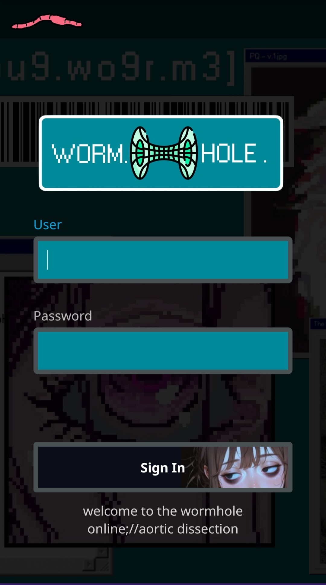

the wormhole
self hosted streaming
My second server experiment was testing out and playing with jellyfin media server software. It's essentially just like netflix or prime but just with your own files.
🏴☠️ All 100% legally obtained obviosly 🏴☠️
Whats cool about jellyfin is that you can customize it completly with basic CSS. Actually the whole thing is FOSS so you could customize the html/ui it serves even further if you wanted. Something that would be awesome to write in is a page for movie requests from users. My users are my mom and dad though so they can just text me. But I might make it for the fun of it.
here you can see my log in screen

the background image is a semi-ugly but kinda cool desktop wallpaper I had made a bit ago.
By default you will only be able to access the server while on the same LAN network. There are various methods for accessing it over the internet. I didn't want to just have my ports wide open because of people who run port scanning bots, like I discovered with random traffic from India when I opened up my apache server in my first experiment. Essentially it is like a program going up to all of your doors and windows and jiggling the handle. If it's unlocked then it can report back for further probing, if not then it goes to the next port. Freaks me out.
The method I settled on that seemed to be the safest and relatively simple is to utilize Tailscale vpn. Free accounts allow 20 devices to be on a virtual network, and to be honest 20 is probably more than I am willing to allow to suck down my home internets bandwidth. Tailscale works good for allowing me to share this with my mom and dad and maybe a few others depending on how big of a drain on my network this turns out to be.
I am curious about certain routers being capable of filtering for specific ip addresses. So I could open ports to known ip's only, but my router I got stock from my internet provider does not have this functionality. I'm not sure how well it would work for dynamic ip's anyways I would have to be constantly editing it every time ip's were renewed which would be a pain. Could write scripts to automate it I suppose but Tailscale is a whole lot easier
Additionally with Tailscale, everyone is able to simply type in wormhole:8096 into their web browser such as chrome, edge, firefox etc. to access it. [with 8096 being the port # for my server] so it makes it really easy for people rather than having to type in my whole ip address.
jellyfin utilizes SQLite databases so I tried my hand at querying them. This is super cool to me and relatively useful too for monitoring traffic to my server.
This shell script I wrote is called wormholeLog.sh
Some other customization I did was some artwork for all of my media folders (Anime, TV, Movies, Cartoons)
Jellyfin has been a blast to get up and running. And it's been a great learning opprotunity as well.
Some day I wouldn't mind figuring out how reverse proxys work to get this up online without the need for a vpn. There is so much to learn with homelabs and servers but it has been very rewarding
Also might consider adding music libraries or photos and documents as well to make like a private self-hosted cloud storage service. Just knowing google and microsoft train ai off your google photos/one drive for facial recognition etc makes me want nothing to do with them